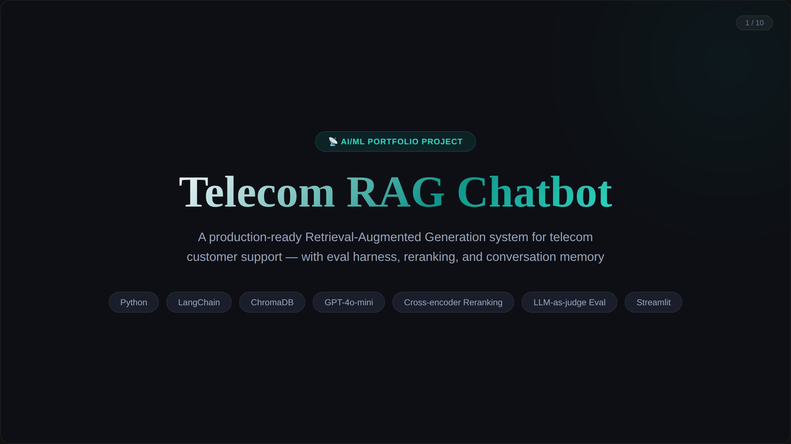
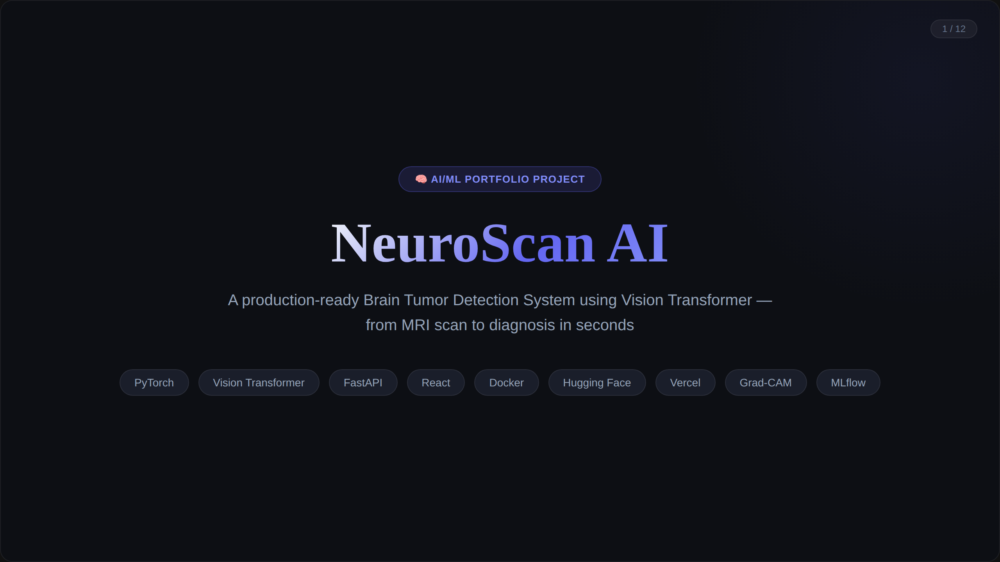
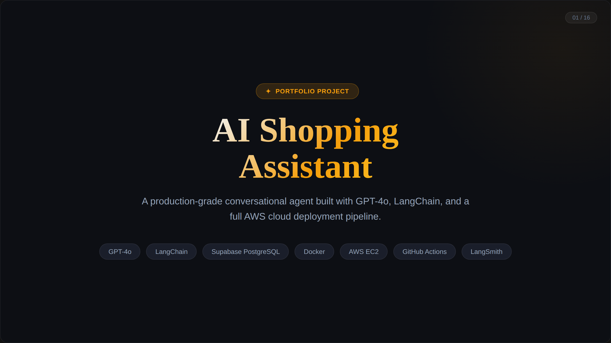

AI / ML Engineer · MSc Artificial Intelligence
De Montfort University, Leicester, UK
Building production AI systems — RAG pipelines, agentic assistants, and deep learning models — each with real evaluation harnesses and measurable results. Not just demos. Systems.
I'm a software engineer with a full stack background (MERN) now focused fully on AI and machine learning. Currently completing MSc Artificial Intelligence (full-time) at De Montfort University, Leicester.
What separates my work from tutorial projects: I measure everything. My RAG chatbot had 83% retrieval hit rate at baseline. I built an eval harness, diagnosed the gaps, augmented the knowledge base, and hit 100%. That's engineering — not demo building.
I've deployed AI systems to AWS EC2, Streamlit Cloud, Hugging Face Spaces, and Vercel with proper CI/CD pipelines, Docker containers, and observability.
📍 London, UK · 📞 +44 7386 488821 · ✉️ helloyash789@gmail.com

Production-ready customer support chatbot using Retrieval-Augmented Generation. Retrieves from three knowledge sources with cross-encoder reranking and score-threshold filtering. Built an LLM-as-judge evaluation harness — the results showed data gaps, not algorithm flaws.

Medical AI classifying brain tumors from MRI scans into 4 categories using Vision Transformer. Systematic architecture comparison: frozen ViT underperformed EfficientNet at 75.25%. Unfreezing 4 transformer blocks with AdamW + CosineAnnealingLR: 95.06% accuracy.

Production agentic shopping assistant with manual ReAct tool loop, dual-database backend (SQLite dev / PostgreSQL prod), GPT-4o vision search, and full CI/CD to AWS EC2. LangChain's built-in agent silently dropped tool results — manual loop fixed it.
I'm actively looking for AI/ML Engineer, LLM Engineer, and Data Scientist roles in the UK. Open to full-time, contract, and internship opportunities.
⬇ Download My CV